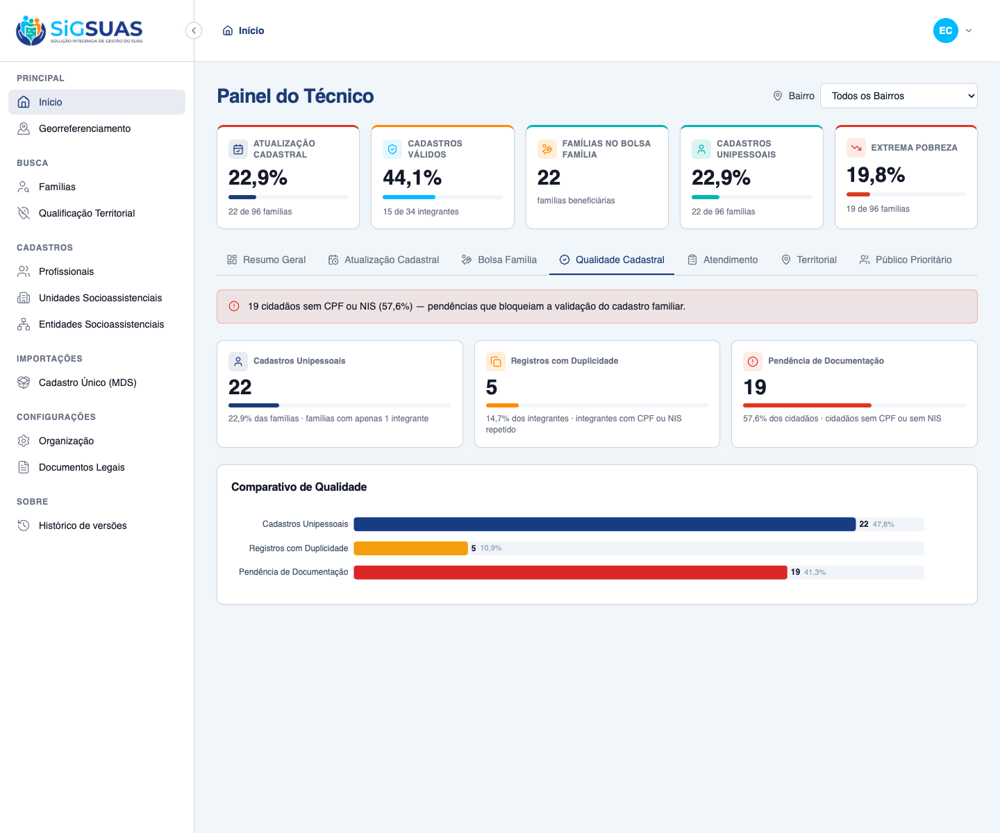
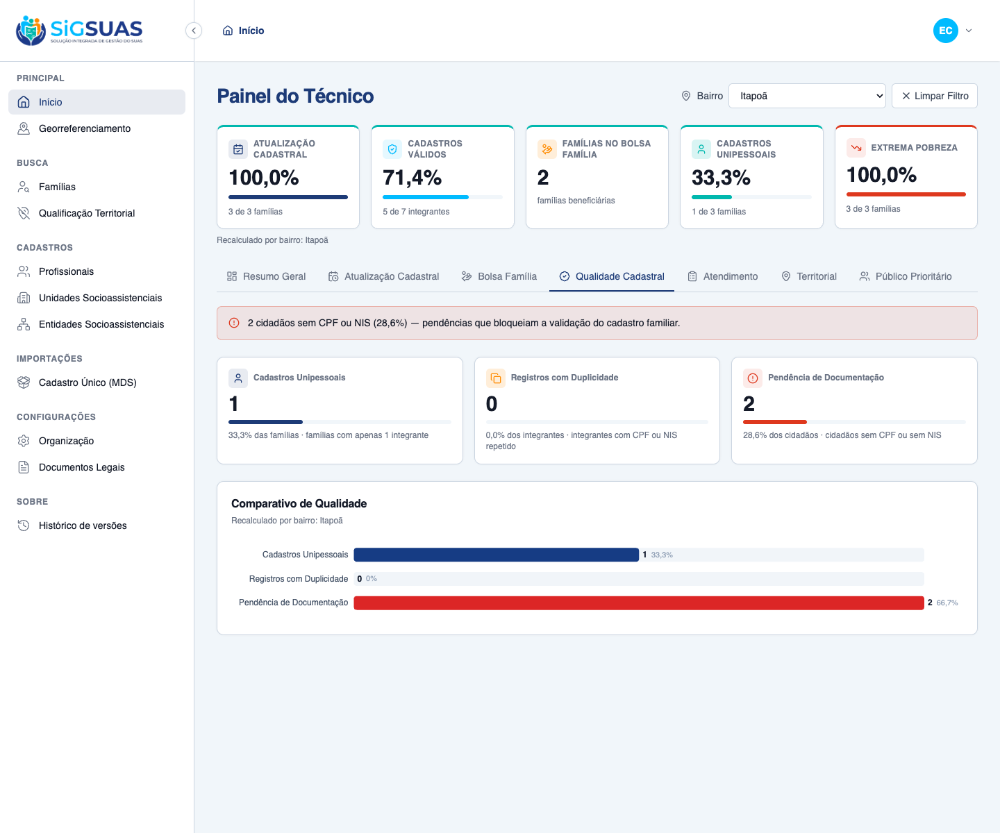

8 critérios evidenciados: 4 por navegador dirigindo o client real (CA06 volume de cidadãos com pendência de documentação, RN06 os 3 indicadores de qualidade, e o RG01 nas modalidades padrão/dinâmico/limpar) e 4 por suíte automatizada (consistência dos Unipessoais com o KPI 4, duplicidade por registro, isolamento multi-tenant e gate de permissão). Todos atendidos. Suíte Pest do backend: 12 testes verdes (37 asserções).
| CA | Critério | Status |
|---|---|---|
| CA06 | Detecção de pendências civis (volume de cidadãos sem documentação) | ATENDIDO · navegador |
| RN06 | Indicadores do Painel 4 (Unipessoais, Duplicidade, Pendência) | ATENDIDO · navegador |
| RG01-a | Filtro global por Bairro — comportamento padrão ("Todos os Bairros") | ATENDIDO · navegador |
| RG01-bc | Filtro global por Bairro — recálculo dinâmico e "Limpar Filtro" | ATENDIDO · navegador |
| UNI | Cadastros Unipessoais consistentes com o KPI 4 da barra fixa | ATENDIDO · navegador + automatizado |
| DUP | Registros com Duplicidade — contagem por registro (CPF/NIS repetido) | ATENDIDO · automatizado |
| ISO | Isolamento multi-tenant | ATENDIDO · automatizado |
| PERM | Gate de permissão (sem dashboard.view-indicators → 403 / painel oculto) | ATENDIDO · automatizado |
Critério (Gherkin): Dado que existem pessoas sem CPF cadastrado na base importada Quando acesso o Painel 4 (aba "Qualidade Cadastral") Então o sistema contabiliza e exibe o volume total de cidadãos com pendência de documentação básica (sem CPF ou sem NIS) no recorte territorial selecionado.
Como foi testado: Login como Master, aba Qualidade Cadastral. Leitura do cartão Pendência de Documentação (em destaque de alerta).

Critério (Gherkin): Dado um recorte com famílias e integrantes Quando o painel é calculado Então "Cadastros Unipessoais" = famílias com exatamente 1 integrante ativo E "Registros com Duplicidade" = integrantes ativos com CPF ou NIS repetido E "Pendência de Documentação" = cidadãos distintos sem CPF ou sem NIS.
Como foi testado: 3 cartões + gráfico de barras comparando os indicadores (Apache ECharts).
Critério (Gherkin): Dado que acabei de carregar a aba "Qualidade Cadastral" Quando nenhum bairro está selecionado Então o filtro inicia em "Todos os Bairros" E os 3 indicadores refletem a consolidação municipal.
Como foi testado: Ao abrir o dashboard, o filtro global (topo, à direita) inicia em Todos os Bairros.
Critério (Gherkin): Dado que o filtro global está em "Todos os Bairros" Quando eu seleciono o bairro "Itapoã" Então os 3 indicadores recalculam para as famílias do bairro (RN08) E ao acionar "Limpar Filtro" o painel volta à consolidação municipal.
Como foi testado: Seleção do bairro Itapoã no filtro global; um único evento recalcula a barra fixa E o painel (RG01/RN09).

Critério (Gherkin): Então "Cadastros Unipessoais" (Painel 4) é igual ao numerador do KPI 4 (Cadastros Unipessoais) da barra fixa (#10184) para o mesmo recorte.
Como foi testado: Verificado na UI (barra fixa e painel mostram 22 / 1) e por teste automatizado (Pest).
Critério (Gherkin): Dado 3 integrantes ativos com o mesmo NIS e uma pessoa (CPF) em 2 famílias Quando os indicadores são calculados Então "Registros com Duplicidade" conta por registro (3 do NIS + 2 do CPF = 5).
Como foi testado: Coberto por testes automatizados (Pest) — ver apêndice.
Evidência por cobertura automatizada — ver Anexo.
Critério (Gherkin): Dado um usuário vinculado ao Tenant A Quando ele solicita o Painel 4 Então apenas famílias/integrantes do Tenant A entram nos cálculos E um neighborhood_uuid fora do município do Tenant A retorna 422.
Como foi testado: Coberto por teste automatizado (Pest) — ver apêndice.
Evidência por cobertura automatizada — ver Anexo.
Critério (Gherkin): Dado um usuário sem dashboard.view-indicators Quando ele chama o endpoint do Painel 4 Então recebe 403 (e o painel não é exibido).
Como foi testado: Coberto por teste automatizado (Pest) — o endpoint reusa o gate da barra fixa (#10184).
Evidência por cobertura automatizada — ver Anexo.
PASS Tests\Feature\Dashboard\RegistrationQualityTest ✓ it counts single-person families equal to the strategic indicators… 0.39s ✓ it counts duplicate records by repeated NIS per record, not per gro… 0.06s ✓ it counts duplicate records by repeated CPF (same person in more th… 0.06s ✓ it does not treat empty CPF/NIS as duplicates (RN03.1) 0.05s ✓ it counts distinct citizens with missing CPF or NIS (CA06) 0.05s ✓ it deduplicates a pending citizen linked to more than one family 0.05s ✓ it recalculates for a neighborhood, covering only geocoded families… 0.06s ✓ it returns zeroed indicators without error when the scope has no me… 0.04s ✓ it returns 422 for a neighborhood_uuid outside the tenant municipal… 0.04s ✓ it denies the panel to the base operator without the dedicated role 0.04s ✓ it grants the panel to the Master without any add-on role 0.04s PASS Tests\Feature\TenantIsolation\DashboardRegistrationQualityIsolationTest ✓ it never counts families/members from another tenant in the registr… 0.04s Tests: 12 passed (37 assertions) Duration: 1.01s